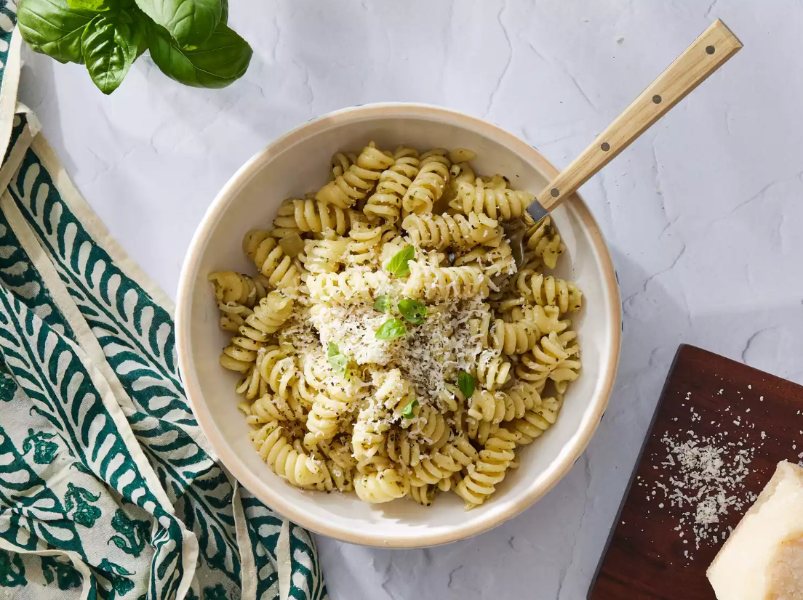

Pasta Pesto

Description
Pesto pasta is easy to make and full of flavor. It tastes good hot or cold!
Ingridients
- Pasta: Start with your favorite pasta shape.
- Onion and oil: Cook the onion in olive oil until it’s translucent.
- Pesto: Use store-bought or homemade pesto sauce.
- Seasonings: Salt and pepper.
- Cheese: Grate your own Parmesan cheese.
Steps
- Gather all ingredients.
- Cook pasta in salted water.
- Cook onion in oil.
- Stir in pesto, salt, and pepper.
- Combine pesto mixture with pasta and toss with cheese.